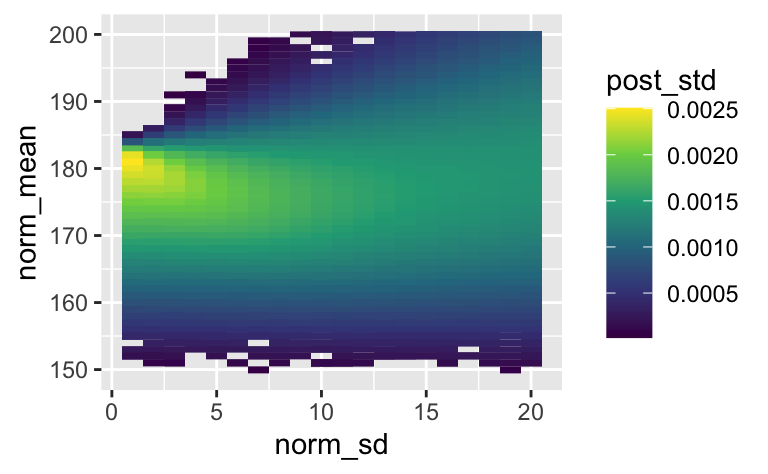
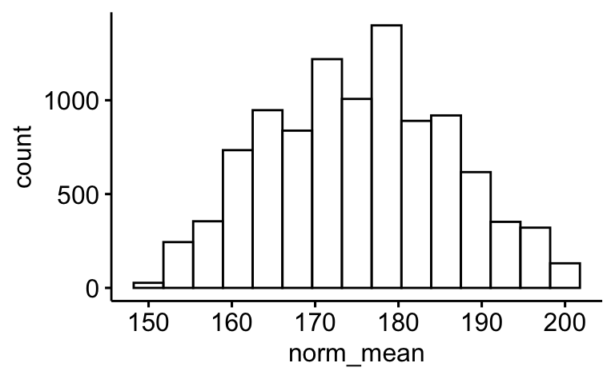
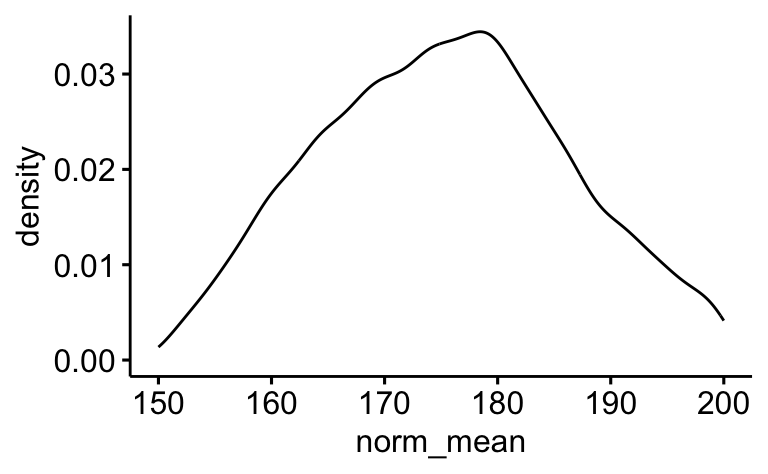
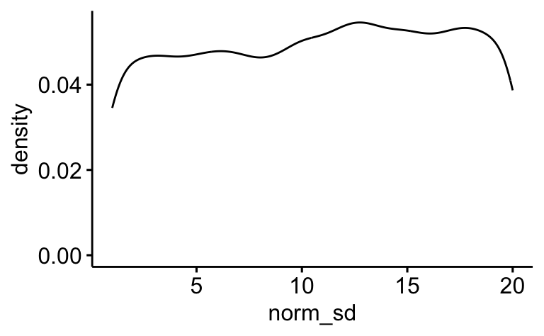

library(pradadata) # für den Datensatz `wo_men`
library(prada) # für bayesbox, alternativ mit `source`
library(tidyverse)
library(ggpubr)Aufgabe
Wir interessieren uns für die typische Körpergröße deutscher Studentis. Hier findet sich dazu ein Datensatz.
Ausgehend von der Annahme, dass sich die Körpergröße normalverteilt (innerhalb eines Geschlechts) suchen wir die Parameter der Normalverteilung, also Mittelwert und Streuung.
Gehen wir von folgenden Apriori-Wahrscheinlichkeiten für die Parameter der Normalverteilung aus:
- Mittelwert: 150cm bis 200 cm, jeder Wert gleich plausibel, alle anderen Werte unmöglich
- SD: 1cm bis 20cm, jeder Wert gleich plausibel, alle anderen Werte unmöglich
Ja, das sind ziemlich einfältige Annahmen, aber gut, fangen wir damit an.
Erstellen Sie eine Bayes-Box!
Hinweise:
- Untersuchen Sie den angegebenen Parameterbereich in 1cm-Schritten.
- Orientieren Sie sich im Übrigen an den allgemeinen Hinweisen des Datenwerks.
Lösung
Daten importieren:
data(wo_men)Mittelwert in der Stichprobe:
wo_men |>
group_by(sex) |>
summarise(height_avg = mean(height, na.rm = TRUE),
height_sd = sd(height, na.rm = TRUE))# A tibble: 3 × 3
sex height_avg height_sd
<chr> <dbl> <dbl>
1 man 183. 9.96
2 woman 161. 42.8
3 <NA> NaN NA Zur Berechnung der Likelihoods diskretisieren wir die stetige Variable height in Stufen von jeweils 1cm, der Einfachheit halber.
Die Wahrscheinlichkeit für das 1cm-Intervall um unserem Stichprobenergebnis herem (182.5cm bis 183.5cm), bei z.B. einem Mittelwert von 180cm und einer SD von 10cm, entspricht dann dieser Differenz:
obere_grenze <- pnorm(q = 183 + 0.5, mean = 180, sd = 10)
untere_grenze <- pnorm(q = 183 - 0.5, mean = 180, sd = 10)
obere_grenze[1] 0.6368307untere_grenze[1] 0.5987063obere_grenze - untere_grenze[1] 0.03812433Visualisieren wir uns kurz dieses Intervall.
library(mosaic)
xpnorm(q = c(182.5, 183.5), mean = 180, sd = 10)[1] 0.5987063 0.6368307
Als nächstes legen wir die Werte für unsere Bayes-Box fest.
norm_mean <- seq(from = 150, to = 200, by = 1)
norm_sd <- seq(from = 1, to = 20, by = 1)Jetzt bauen wir unsere Bayes-Box.
Wenn wir die Wahrscheinlichkeiten der Parameter für alle Kombinationen aus 51 Mittelwerten und 20 SD-Werten prüfen wollen, wird die Tabelle ganz schön lang:
anzahl_kombinationen <- length(norm_mean) * length(norm_sd)
anzahl_kombinationen[1] 1020Mit expand_grid kann man sich eine Tabelle erstellen lassen, die alle Kombinationen zweier Variablen aufschreibt:
bayes_box <-
expand_grid(norm_mean, norm_sd)
head(bayes_box)# A tibble: 6 × 2
norm_mean norm_sd
<dbl> <dbl>
1 150 1
2 150 2
3 150 3
4 150 4
5 150 5
6 150 6Das sind unsere Parameterwerte: Jede Kombination eines Mittelwerts und einer Streuung ist eine Hypothese. Insgesamt haben wir also 1020 Parameterwerte.
So, bauen wir die Bayes-Box weiter:
L <- pnorm(183.5, mean = bayes_box$norm_mean, sd = bayes_box$norm_sd)
bayes_box2 <-
bayes_box |>
mutate(hyp = 1:anzahl_kombinationen,
lik = L,
post_unstand = hyp * lik,
post_std = post_unstand / sum(post_unstand))samples <-
bayes_box2 |>
slice_sample(
n = 1e4,
weight_by = post_std,
replace = TRUE
)Und jetzt visualisieren:
samples |>
ggplot() +
aes(x = norm_sd,
y = norm_mean,
fill = post_std) +
geom_tile() +
scale_fill_viridis_c()
Die Stichproben-Postverteilung erlaubt es auch bequem, die einzelnen Parameter der Post-Verteilung jeweils für sich zu visualisieren:
gghistogram(samples,
x = "norm_mean",
bins = 15)
ggdensity(samples,
x = "norm_mean")
ggdensity(samples,
x = "norm_sd")
Categories: Categories:
- 2023
- bayes
- bayes-box
- string